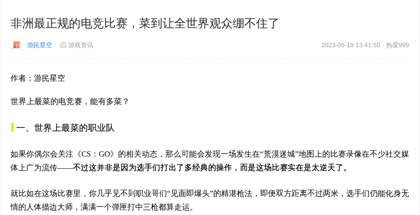

对电子竞技绑架游戏的抗议: 游戏玩家与电竞选手的决裂之路
Table of Contents
〇 开头的话
今年一月份的时候(2023年1月19号), 北京青年报发了一篇名为 我国电竞人才缺口超百万 的文章. 这篇文章本身没什么, 只是描述了一下所谓电竞行业缺少人的情况. 真正让我感到恼火的, 并不是这篇文章, 而是在这篇文章之后的一些营销号文章, 就比如一篇名为 我国电竞人才缺口超百万，多少家长被打脸，打游戏还真的能出名堂 的文章. 这些狗腿子们在它们的营销号里面说了些什么呢? 这类文章的大致意思就是"打游戏也可以'打出名堂', 打着打着说不定就成为'电竞选手'了, 并没有一些家长想得那么'一无是处'".
可惜的是, 在目前的互联网上, 我没能找到任何在我之前反驳这样的自说自话的内容. 人们似乎理所当然地把电竞也算入了游戏, 把用电竞替游戏"辩护"的行为当成了某种"政治正确", 对于这之中的种种不协调居然毫无察觉. 所以我这篇文章, 不但是为了反驳那些"玩游戏可以有'出息'"的烂俗观点, 也是为了将游戏与电竞划清界限.
一 烂俗而虚伪的"自证"
狗腿子们常常热衷于举出一些"XX年电竞产业收入YYY", "XX年赛事盈利高达YYY"之类的例子, 以此来表明"电竞行业"的"前景"如何如何, 最后向(它们臆想中的)家长证明"打游戏也是很有钱途的". 以这样的思路来给(它们眼中的)游戏"正名".
这些狗腿子伪装成游戏玩家的"友军", 却在行着侵吞玩家话语之事, 把游戏纳入到了它们狭獈的世界观中, 生产出对于游戏的刻板印象. 为什么这些热衷于给游戏"正名"的家伙不会是玩家的友军? 不妨想一下, 游戏需要被"正名"吗?
游戏从来就不需要去"正名", 为了虚伪地将自己想玩游戏的想法"合理化", 于是将游戏纳入竞技体育的麾下, 试图用作为竞技体育的电竞来代表游戏, 好让游戏也一同被"去污名化", 而这样的虚伪却是对更加广泛的, 非竞技的, 多元的游戏话语的垄断. 作为游戏玩家的更加广阔的视野被这些"去污名者"弃之不顾, "游戏"被这些"电竞爱好者"擅自代表了.
打游戏就是打游戏, 玩家就是玩家, 不需要去为了tmd"有用"服务, 不需要tmd去证明"打游戏也能'出人头地'", 臭打游戏的不需要用"电竞行业"的"前景"给自己当精神饲料自己骗自己. 就为了证明"打游戏有用"而归顺于精英主义的运营话术的狗腿子根本就不配叫作玩家. 为了证明"游戏不只是在玩"而擅自以竞技项目来定义游戏, 压迫游戏本身的多元性的野蛮侵略者们, 它们正是游戏玩家们斗争时需要面临的敌人. 任何用电竞为游戏"正名"或"辩护"的行为都是在把游戏拖入庸俗功利的垃圾堆中, 哪怕这些人自我感觉良好, 自认为在行善, 其所做所为也不过是为了自己的个人爱好而牺牲真正的玩家之间更广泛的爱好.
游戏是艺术, 是多元的, 丰富的, 动态的艺术, 不需要那些追逐排名段位的可怜的竞技体育来帮忙"正名", 不需要去说服"家长们"使之觉得是在"做正经事", 广泛的艺术不需要你油腻的竞技体育来拯救, 正是你们那些运动员世界的"奖牌式"的"自证"弄脏了艺术, OK?
二 "有用"的电竞中心主义
那些人把"电竞"的"功劳"也"分享"给了游戏, 正是在把游戏纳入"电竞"的麾下, 用"主流"的电竞项目去代表电子游戏, 以"功劳"作为游戏的标准, 这正是对多元性的蔑视. 如果按照"功劳"来论, 那某些"5V5平衡竞技"的赛事所赚取的"功劳"应该是最大的. 但是作为玩家, 就得为了这些"功劳"买单吗? 所谓竞技体育(不光是电竞, 还包括职棒, 足球, 赛车等, 当然某个以"奥"开头的"国际盛会"也不例外), 认可的正是热度, 遵循的正是市场, 而市场是个并没有什么"公平"可言的强者愈强弱者愈弱的世界, 也正如在电竞中原本就泛滥的moba类项目越来越泛滥. 在这样的世界中, 又凭什么要多元而广泛的玩家去承认同质而泛滥的"功劳"呢? 市场看似多元, 实则是反多元, 真正的艺术是做不到为了市场服务的, 只有同样是精英主义的竞技体育才能和市场经济贴之如亲.
1. 电竞中心主义即商业中心主义
电竞赛事, 这在很多竞技体育赛事中都一样, 运动员是经过包装并用于变现的原料, 运动员不单单是运动员, 而是会被包装成为体育明星. 而在电竞赛事的运营之中体现的是唯热度论, 赛事光"顶尖"是不够的, 而是要吸引足够的流量. "电竞功劳论"以基于某个游戏本体的电竞赛事在商业上的成功作为游戏评判的标准, 玩家话语被剥离, 只剩下商业宣传. 当然, 并非是说游戏中就没有商业宣传, 目前的"游戏业界"也是被商业侵蚀的. 但游戏与电竞不同, 游戏本身可以脱离商业运作, 以开放, 非盈利的形式出现. 电竞作为职业化的竞技体育, 打从一开始就离不了商业运作. 竞技体育的运动员是全职的运动员, 以竞技作为挣钱的手段. 尽管不作为主要挣钱手段的业余运动员是存在的, 但任何竞技体育都会有一些象征着顶峰的职业赛事, 这样的世界, 业余运动员是不可能作为其支撑的. "顶尖赛事"这一形式, 使得竞技体育没有脱离商业的可能.
2. 电竞中心主义即精英主义
在竞技体育的世界, "菜"是原罪. 在竞技体育的比赛中, 运动员的水平可以带来"荣誉", 也可以成为"笑料". 在规则下争得第一名是竞技运动员唯一的追求, 所有的一切, 都是为了最终的封王. 和游戏不同, 竞技体育的本质是给参与者分高低优劣, 也正因为如此, 在电竞的圈子内流行嘲笑"菜"的运动员, 当然嘲笑本身没什么, 正如我也嘲笑那些狗腿子一样, 只不过格局确实不同.

Figure 1: 在电竞中, "能有多菜"是相当值得起哄的一件事
而在游戏中, 又"菜"又爱玩的人, 恰恰是真正热爱的人, 这些人是确确实实地摆脱了庸俗的价值观的人, 能够从一开始就为了自己玩游戏, 既不需要为了官方钦定的输赢排名, 也不会因此而消极怠惰, 更不需要在家长面前"证明". 能够摆脱被施加的游戏目的的束缚, 以自己的方式获得体验, 这样的人便是有自我的人, 是脱离了陈腐的精英主义驯化的超人, 或者说, 脱离了使人不是人的东西, 成为了人.
三 游戏玩家与电竞运动员的指认与澄清
有人可能认为游戏和电竞不能等同, 但竞技游戏却是和电竞等同的. 但就算是具有竞技性的游戏, 也并不等同于电竞. 竞技游戏只要当成游戏来玩, 那它依然是游戏, 而电竞则永远只能是一种竞技体育. 竞技游戏完全可以在不成为电竞的情况下游玩, 而电竞, 其比赛所用的"游戏的本体"也可以不是竞技游戏, 甚至其本体可以不必是个游戏. 举个夸张点的例子, 如果有"在1分钟之内尽可能多地在计算器程序中输入题目并得出答案"的赛事, 那它也可以算电竞. 电竞项目的本体并没有一开始就必须作为游戏被设计出来的规定, 不管换成什么样的本体, 电竞都是体育而非游戏的存在. 电竞作为竞技体育, 只是借用了电子游戏的程序本体作为其开展比赛的载体. 竞技体育就是竞技体育, 它不包含游戏, 也不是游戏的子集.
玩家与运动员道不同, 玩家之道是创造游戏的目的, 运动员之道是在一个既定的规则之下争夺有限的奖牌. 竞技体育, 就必是要有先后排名, 就必会有规则定义下的成功者和失败者, 所谓的"体育精神"无非就是对于遵守规则的榜样式的强调-—一种扰乱视野的"PUA".
或许运动员和玩家会使用同一个"游戏的本体", 但ta们并没有在"玩同一个游戏", 我在 反对"电子阳痿"说 一文里说过"'游戏的本体'在设备中运行, 而'游戏的世界'则在玩家的意识中运行", 放到这里, 玩家的意识中运行的是"游戏世界", 运动员的意识中运行的是"竞技体育的世界". 处在什么样的世界并不由"游戏的本体"决定, 而在于世界的"居民". 电子竞技的世界和电子游戏世界只是共享了一部分"游戏的本体"而已, 它依然是竞技体育的延伸而不是游戏的延伸.
怎样区分自己是运动员还是玩家? 很简单, 你只要认为你正在"玩"的项目是需要按照某个钦定的规则给所有"玩"这个项目的人分出高低名次, 那你就是个运动员了. 运动员可以"强"也可以"弱", 也可以还没有参加过"正式比赛", 最重要的是你已然活在运动员的世界中, 只要认可或是归顺于这种精英主义, 就可以算是某种运动员了. 如果你认为"玩"这个项目只需要体验你想要体验的, 并不需要在意名次, 胜负, 等等一切被钦定的东西, 那你就是个合格(一个符合玩家标准的及格线, 及格线之上不再有高低之分)的玩家, 你可以在别人的眼中很强, 也可以在别人看来很菜, 重要的是这些都不能定义你是谁.
玩家与运动员有着不相同的目的, 确实一个人可以在不同的目的之间来回摆动, 有时作为玩家, 有时作为运动员, 但人不能同时是玩家和运动员. 正如一个运动员在闲暇时可以是个艺术家, 但在赛场上, ta只能作为运动员争取奖牌-—进入了工作, 就不再是生活了.
尽管那些一谈起游戏就开始电竞电竞的复读机们是如此狭獈, 但是确实很少有人能有人能真正将两者区分开来, 甚至有些人为了推广其个人爱好故意将这两样混淆. 在现代互联网的环境下, 有时声音出奇地同质化, 一名前卫的玩家, 需要主动对一些习以为常的混淆反思, 需要对一些已经发生的鸠占鹊巢表达抗议.
"并不是简简单单地打个游戏就算是电竞", 这样的电竞高贵论下的话语目前已经被广泛认可, 这并没什么不好的, 而本文不但认可这句话, 还要作出补充: "并不是简简单单电个竞就算是在玩游戏". 游戏和电竞, 景水不犯核水, 游戏不是电竞, 电竞也同样不是游戏, 玩家不是电竞选手, 电竞选手也不是玩家, 艺术家不是运动员, 运动员也不是艺术家. 游戏与电竞, 划清界限-—这样一来, 既能避免"臭打游戏的"被认为是"想从电竞选手身上沾光", 又能让那些不得了的运动员们不至于和那些又菜又不上进的普通的打游戏家伙们的混为一谈, 一举两得.
四 结语
那些以电竞来为游戏"辩护"的电竞中心主义狗腿子们, 看似在反对它们眼中的封建的家长, 但它们又恰恰是封建的延伸. 用"有用"来绑架游戏, 毫无疑问这些狗腿子是认可"游戏需要被归入它们眼中'有用'的价值之下(比如电竞行业带来的流量)", 与某些家长用"教育意义"之类的要求来绑架游戏并没有本质区别, 都是为了单一的, 浅薄的, 精英化的目的去迫害更广泛, 更丰富, 更多元的目的.
我在这篇文章里的重点其实不是详细讨论什么竞技体育和精英主义好还是不好, 你若是爱搞精英主义, 回到电竞圈子你们自己归自己搞精英主义去, 我就是想对某些自说自话拿电竞碰瓷游戏的电竞中心主义者说: 玩家不是运动员, 你"电竞行业"的发展, 关玩家屁事, 有事没事把"电竞行业"的发展当成是在带动"游戏行业发展", 想PUA就滚去找你们家运动员去.
真正的玩家的最终目标依然是玩家, 不是去成为某些人口中的"电竞人才", 不是去成为某些人兜里的钱, 不是去成为某些人餐桌上的肉!